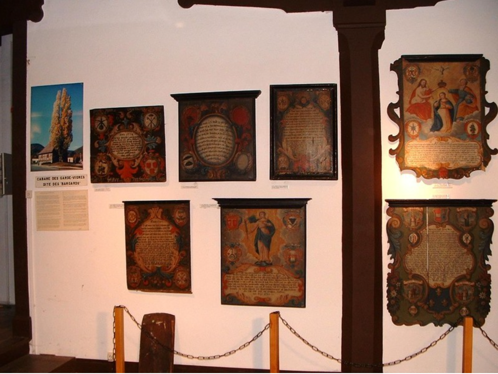
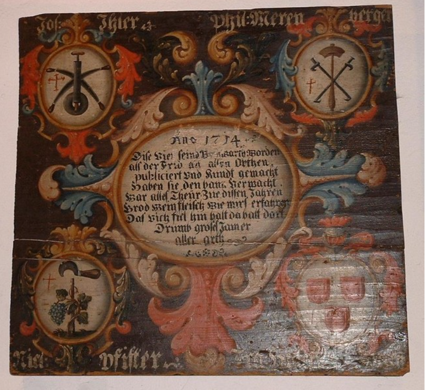

les principaux sites
Engelbourg
histoire
Ce monument aujourd'hui emblématique de la ville de Thann voit son origine au XIIIe siècle. Il faut alors rappeler l'ouverture de cols dans les Vosges, permettant des échanges, et des pélerinages entre le nord de la Flandre et le Nord de l'Italie. Alors, le passage s'accentua fortement dans la vallée de la Thur qui devint effectivement un lieu privilégié pour le passage.
La famille seigneuriale dominant la zone, la seigneurerie des Ferrettes, décida donc d'établir un péage, à Thann (ils en possédaient déjà un à Vieux-Thann, ils l'ont déplacé sur Thann, lieu mieux adapté pour capter ce nouveau flux), ainsi qu'un nouveau château (ils ont déjà eu un premier château en bois quelque part à Vieux-Thann)
Vers 1234, nous avons la 1ère mention directe du château de Thann.
En 1390, L'archiduc Léopold III de Habsbourg cède un impôt aux villes de Thann et de Masevaux afin de faire crépir le mur du château (mur que l'on n'a pas pu identifier).
Entre 1471 et 1473, Les commissions d'enquêtes bourguignonnes donnent une description du château dont l'extension est très proche du plan des environs de 1660. Leur énumération ne permet pas de localiser précisément les bâtiments décrits. Les couvertures en tuiles et bardeaux sont décrites en mauvaise état.
En 1557, des réparations ont eu lieu sur une localisation inconnue.
En 1570, la maison du châtelain tombant en ruine est détruite.
Entre 1593 et 1601, on remet en état le logis du châtelain et les ouvrages de défenses.
Entre 1618 et 1621, on engage les travaux pour créer un puits, surement sur la base d'une ancienne citerne.
En 1673, de mai à septembre, on détruit de façon systématique ce qu'il reste du château.
collégiale Saint-Thiébaut
la cabane des bangards
un peu d'histoire
 Ce que l'on appelle la « cabane des bangards » est une maisonnette à colombages située autrefois au milieu du vignoble et actuellement près du Relais Culturel Pierre-Schiélé.
Elle comporte une pièce unique d'environ 20 m2, recouvrant une cave, et surmontée d'un grenier.
Il y avait une cheminée pour le chauffage et quelques placards de rangement.
Ce que l'on appelle la « cabane des bangards » est une maisonnette à colombages située autrefois au milieu du vignoble et actuellement près du Relais Culturel Pierre-Schiélé.
Elle comporte une pièce unique d'environ 20 m2, recouvrant une cave, et surmontée d'un grenier.
Il y avait une cheminée pour le chauffage et quelques placards de rangement.
Cette pièce servait de logement pour les 4 bangards (gardiens du ban, du vignoble) pendant leur mandat annuel -du printemps à l'automne– période d'activité agraire. Les repas étaient fournis par leurs familles…
Elle se remarque visuellement par l'arbre croissant à son côté. C'était un magnifique peuplier, arbre « de la liberté »planté en 1848 et qui fut remplacé en 2009 – suite à une tempête.
L'originalité de cet édifice est d'être bien conservé et de présenter aux journées du Patrimoine les souvenirs laissés à la postérité par certains bangards : des dalles de pierre et des tableaux peints.
Que savons nous bangards?

A l'origine, il s'agit de 4 bourgeois élus en janvier parmi les 4 corporations reconnues de Thann. Ces bangards devaient pour exercer leur charge cesser d'exercer leur métier pendant une année et loger du printemps à l'automne dans la "cabane des bangards". Les bangards devaient prêter serment à leur prise de fonction.
Leur rôle est lié à l'importance de la viticulture dans l'économie thannoise (ils doivent à la fois protéger le vignoble des dégâts causés par les hommes ou les animaux, faire assurer l'entretien de certains chemins, surveiller la divagation d'animaux et prévenir les incendies en forêt; mais à titre général ils doivent faire régner l'ordre sur le ban de la cité avec droit d'infliger des amendes tant pour les dégâts matériels que pour d'autres atteintes plus politiques - par exemple inciter les jeunes gens à fréquenter les églises ...)
Toutefois, il fallait avoir été bangard pour prétendre entrer au "Magistrat", le conseil qui administrait la ville.
La liste des noms de plus de 800 bangards entre 1483 et 1789 est connue !
Les objets des bangards
1. Les tableaux des bangards Les dalles de pierre et les tableaux peints présentent des points communs :- l'année de fonction
- les noms ou initiales des 4 bangards concernés
- les emblèmes de leurs métiers dans des écus
- (pour les tableaux) : un résumé des faits marquants de l'année, en allemand de l'époque.
Les 15 tableaux ci-dessous des bangards sont exposés en permanence au Musée.Trouvez le plus étonnant où l'on voit un homme chuter du sommet de la collégiale !

